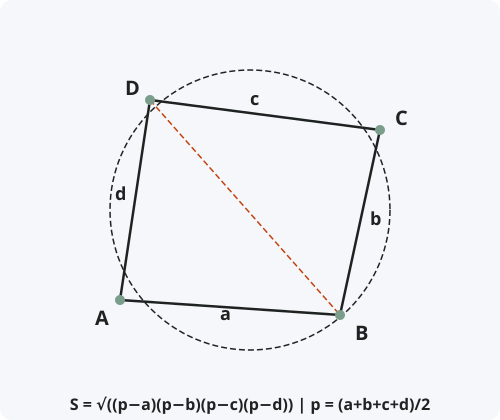

Формула Брахмагупты
Формулировка
Площадь вписанного в окружность четырёхугольника может быть вычислена по формуле: S = √((p−a)(p−b)(p−c)(p−d)), где a, b, c, d — длины сторон, а p = (a + b + c + d) / 2 — полупериметр.
Обозначения
Пусть дан вписанный в окружность четырёхугольник ABCD.
a = AB, b = BC, c = CD, d = AD — длины сторон.
p = (a + b + c + d) / 2 — полупериметр.
S — площадь четырёхугольника.
Тогда: S = √((p−a)(p−b)(p−c)(p−d))

Доказательство
Формула доказана.
Частные случаи
- Формула Герона: если d = 0, четырёхугольник вырождается в треугольник, и формула превращается в S = √(p(p−a)(p−b)(p−c)).
- Квадрат: a = b = c = d, p = 2a, S = √(a·a·a·a) = a².
- Прямоугольник: a = c, b = d, p = a + b, S = √(b·a·b·a) = ab.
- Равнобедренная трапеция: формула упрощается, но остаётся справедливой.
Примеры применения
Пример 1. Вписанный четырёхугольник имеет стороны a = 5, b = 6, c = 7, d = 8. Найдите его площадь.
Решение: p = (5 + 6 + 7 + 8) / 2 = 13. S = √((13−5)(13−6)(13−7)(13−8)) = √(8·7·6·5) = √1680 ≈ 41.
Пример 2. Найдите площадь вписанного четырёхугольника со сторонами 10, 10, 10, 10.
Решение: Это ромб, но не любой ромб можно вписать. Ромб вписывается, только если он квадрат. p = 20, S = √(10·10·10·10) = 100.
Пример 3. Вписанный четырёхугольник имеет стороны 3, 4, 5, 6. Можно ли применить формулу Брахмагупты?
Решение: Да, если четырёхугольник вписанный. p = 9, S = √((9−3)(9−4)(9−5)(9−6)) = √(6·5·4·3) = √360 = 6√10.
Историческая справка
Формула названа в честь индийского математика и астронома Брахмагупты (598–668 гг. н.э.), который впервые привёл её в своём труде «Брахма-спхута-сиддханта» («Усовершенствованное учение Брахмы») около 628 года.
Брахмагупта был одним из величайших математиков древней Индии. Он ввёл понятие нуля как числа, сформулировал правила действий с отрицательными числами и решил квадратное уравнение в общем виде.
Интересно, что Брахмагупта не привёл доказательства формулы — оно было найдено значительно позже. Формула Брахмагупты — обобщение формулы Герона на четырёхугольники.
Интересные факты
- Формула Брахмагупты справедлива только для вписанных четырёхугольников. Для произвольного четырёхугольника существует более сложная формула Бретшнайдера.
- Среди всех четырёхугольников с заданными сторонами вписанный имеет максимальную площадь.
- Если в формуле Брахмагупты под корнем получается отрицательное число, значит, четырёхугольник с такими сторонами нельзя вписать в окружность.
- Формула Брахмагупты — один из самых ранних примеров использования полупериметра в геометрических формулах.
- В Индии Брахмагупту называют «Бхаскара I» в отличие от Бхаскары II, жившего в XII веке.